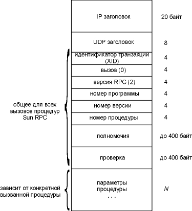
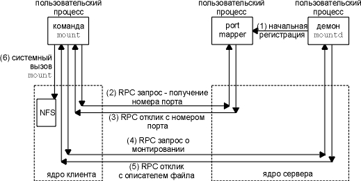
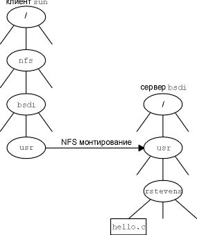

Глава 29 NFS: сетевая файловая система
В этой главе мы рассмотрим сетевую файловую систему (NFS - Network File System), популярное приложение, которое предоставляет приложениям клиентов прозрачный доступ к файлам. Краеугольным камнем NFS является Sun RPC: вызов удаленной процедуры (Remote Procedure Call), что мы и опишем в первую очередь.
Программе клиента не требуется специальных средств, чтобы воспользоваться NFS. Ядро определяет что файл находится на NFS сервере и автоматически генерирует RPC вызов, для того чтобы получить доступ к файлу.
Мы не будем подробно рассматривать, как реализуется доступ к файлам, а рассмотрим, как при этом используются протоколы Internet, особенно UDP.
Вызов удаленной процедуры компании Sun
В большинстве случаев задачи сетевого программирования решаются путем написания программ приложений, которые вызывают функции, предоставляемые системой, чтобы осуществить конкретные сетевые операции. Например, одна функция осуществляет активное открытие TCP, другая пассивное открытие TCP, третья посылает данные по TCP соединению, четвертая устанавливает конкретные опции протокола (включает TCP таймер "оставайся в живых") и так далее. В разделе "Интерфейсы прикладного программирования" главы 1 мы упоминали, что существует два популярных набора функций для сетевого программирования (прикладной программный интерфейс, API), это сокеты и TLI. Программный интерфейс, используемый клиентом, и программный интерфейс, используемый сервером, могут отличаться, так же как и операционные системы, которые функционируют у клиента и сервера. Именно коммуникационный и прикладной протоколы определяют, сможет ли конкретный клиент общаться с сервером. Unix клиент, написанный на C, использующий сокеты в качестве программного интерфейса, и TCP - в качестве коммуникационного протокола, может общаться с сервером на мейнфрейме, написанным на COBOLе с использованием других API и TCP, если оба хоста подключены к сети и оба имеют реализацию TCP/IP.
Обычно клиент посылает серверу команды, а сервер отправляет клиенту отклики. Все рассмотренные нами приложения, - Ping, Traceroute, демоны маршрутизации, клиенты и сервера DNS, TFTP, BOOTP, SNMP, Telnet, FTP, SMTP - все построены именно таким образом.
RPC, вызов удаленной процедуры, реализует иной подход к сетевому программированию. Программа клиента просто вызывает функции в программе сервера. Так это решено с точки зрения программиста, однако в действительности имеет место следующая последовательность действий.
- Когда клиент вызывает удаленную процедуру, вызывается функция на локальном хосте, которая сгенерирована пакетом RPC. Эта функция называется client stub. client stub упаковывает аргументы процедуры в сетевое сообщение и отправляет сообщение серверу.
- server stub на хосте сервера получает сетевое сообщение. Аргументы извлекаются из сетевого сообщения, и осуществляется вызов процедуры сервера, написанной прикладным программистом.
- Функция сервера возвращает управление server stubу, который, в свою очередь, принимает полученные значения, упаковывает их в сетевое сообщение и отправляет сообщение обратно к client stub.
- client stub возвращает приложению клиента значения из сетевого сообщения.
Сетевое программирование, использующее stubы и библиотечные RPC подпрограммы использует интерфейсы прикладного программирования API (сокеты или TLI), однако пользовательские приложения (программа клиента и процедуры сервера, вызываемые клиентом) никогда не обращаются к API. Приложению клиента достаточно вызывать процедуру сервера, при этом все детали реализации спрятаны пакетом RPC, client stubом и server stubом.
Пакеты RPC имеют следующие положительные стороны.
- Программирование становится легче, так как не приходится решать задачи сетевого программирования (а если и приходится, то совсем немного). Прикладные программисты просто пишут программу клиента и процедуры сервера, которые вызывает клиент.
- Если используется ненадежный протокол, такой как UDP, все детали, а именно тайм-ауты и повторные передачи обрабатываются пакетом RPC. Это, в свою очередь, упрощает пользовательское приложение.
- Библиотека RPC обрабатывает необходимое преобразование аргументов и возвращаемых значений. Например, если аргументы состоят из целых чисел и чисел с плавающей точкой, пакет RPC обработает все различия между представлением целых чисел и чисел с плавающей точкой на клиенте и сервере. Благодаря этому упрощается реализация клиентов и серверов для функционирования в разнородных средах.
Программирование RPC подробно описано в главе 18 [Stevens 1990]. Два наиболее популярных RPC пакета это Sun RPC и RPC пакет в Open Software Foundation's (OSF) Distributed Computing Environment (DCE). Мы рассмотрим, как осуществляется вызов процедуры, как выглядит возвращаемое сообщение и как это соотносится с пакетом Sun RPC, так как именно этот пакет используется в сетевой файловой системе. Версия 2 Sun RPC описана в RFC 1057 [Sun Microsystems 1988a].
Sun RPC
Существует два вида Sun RPC. Одна версия построена с использованием API сокет и работает с TCP и UDP. Другая называется TI-RPC (независимо от транспорта - transport independent), построена с использованием TLI API и работает с любыми транспортными уровнями, предоставляемыми ядром. С нашей точки зрения между ними нет никакой разницы, так как в этой главе мы рассматриваем только TCP и UDP.
На рисунке 29.1 показан формат сообщения вызова процедуры RPC, с использованием UDP.

Рисунок 29.1 Сообщения вызова процедуры RPC в формате UDP датаграммы.
Стандартные IP и UDP заголовки показаны раньше (рисунок 3.1 и рисунок 11.2). Все, что следует после UDP заголовка, определяется пакетом RPC.
Идентификатор транзакции (XID - transaction ID) устанавливается клиентом и возвращается сервером. Когда клиент получает отклик, он сравнивает XID, возвращенный сервером, с XID отправленного запроса. Если они не совпадают, клиент отбрасывает сообщение и ожидает прихода следующего. Каждый раз, когда клиент выдает новый RPC, он меняет XID. Однако если клиент передает RPC повторно (если отклик не был получен), XID не меняется.
Переменная call равна 0 для вызова и 1 для отклика. Текущая версия RPC (RPC version) равна 2. Три следующие переменные, номер программы (program number), номер версии (version number) и номер процедуры (procedure number), идентифицируют конкретную процедуру, которая должна быть вызвана на сервере.
Полномочия (credentials) идентифицируют клиента. В некоторых примерах это поле остается незаполненным, а в других здесь можно встретить цифровой идентификатор пользователя и идентификатор группы к который он принадлежит. Сервер может заглянуть в полномочия и решить, обработать ли запрос или нет. Проверка (verifier) используется для защищенного RPC (Secure RPC), которое использует DES шифрование. Несмотря на то, что поля полномочий и проверки это поля с переменной длиной, их длина передается как часть поля.
Дальше следуют параметры процедуры. Их формат зависит от того, как приложение определяет удаленную процедуру. Как получатель (server stub) узнает размер параметров? Так как используется UDP, размер параметров можно рассчитать как размер UDP датаграммы минус длина всех полей вплоть до поля проверки. Когда вместо UDP используется TCP, понятия фиксированной длины не существует, так как TCP это поток байтов без разделителей записей. В подобном случае, между TCP заголовком и XID появляется 4-байтовое поле длины, из которого приемник узнает длину RPC вызова в байтах. Это позволяет, если необходимо, послать сообщение вызова RPC в нескольких TCP сегментах. (DNS использует подобную технику; упражнение 4 главы 14.)
На рисунке 29.2 показан формат RPC отклика. Он отправляется от server stub к client stub, когда удаленная процедура завершает свою работу.

Рисунок 29.2 Формат сообщения отклика процедуры RPC как UDP датаграмма.
XID вызова просто копируется в XID отклика. В поле reply находится 1, по этому полю проводится различие между вызовом и откликом. Поле статуса (status) содержит нулевое значение, если сообщение вызова было принято. (Сообщение может быть отброшено, если номер версии RPC не равен 2 или если сервер не может аутентифицировать клиента.) Поле проверки (verifier) используется в случае защищенного RPC, чтобы указать сервер.
В поле статуса приема (accept status) находится нулевое значение, если все нормально. Ненулевое значение может указывать, например, на неверный номер версии или неверный номер процедуры. Если вместо UDP используется TCP, то, как и в случае сообщения вызова RPC, между TCP заголовком и XID посылается 4-байтовое поле длины.
XDR: представление внешних данных
Представление внешних данных (XDR - External Data Representation) это стандарт, используемый для кодирования значений в RPC вызове и отклике сообщениях - полей заголовка RPC (XID, номер программы, статус приема и так далее), параметров процедуры и результатов процедуры. Стандартный способ кодирования данных позволяет клиенту вызвать процедуру в системе с отличной архитектурой. XDR определен в RFC 1014 [Sun Microsystems 1987].
XDR определяет определенное количество типов данных и точный способ того, как они передаются в RPC сообщении (порядок битов, порядок байтов и так далее). Отправитель должен построить RPC сообщение в XDR формате, тогда получатель конвертирует XDR формат в исходное представление. (В тот формат, который принят для его системы.) Мы видим, например, на рисунках 29.1 и 29.2, что все целые значения, которые мы показали (XID, вызов, номер программы и так далее), это 4-байтовые целые числа. И действительно, все целые в XDR занимают 4 байта. XDR поддерживает и другие типы данных, включая целые без знака, логические, числа с плавающей точкой, массивы фиксированной длины, массивы переменной длины и структуры.
Программы RPC сервера, содержащие удаленные процедуры, используют динамически назначаемые порты, а не заранее известные порты. Это требует "регистрации" в какой-либо форме, для того чтобы постоянно иметь информацию, какая динамически назначаемый порт использует та или иная RPC программа. В Sun RPC этот регистратор называется преобразователь портов (port mapper). (Port mapper - это сервер, который конвертирует номера RPC программ в номера портов протоколов DARPA. Этот сервер обязательно должен быть запущен, чтобы можно было исполнить RPC вызов.)
Термин "порт" (port) в названии происходит от номеров портов TCP и UDP, характеристики семейства протоколов Internet. Так как TI-RPC работает поверх любых транспортных уровней, а не только поверх TCP и UDP, название port mapper в системах, использующих TI-RPC (SVR4 и Solaris 2.2, например), было преобразовано в rpcbind. Однако мы будем продолжать использовать более привычное - port mapper.
В действительности, сам преобразователь портов должен иметь заранее известный порт: UDP порт 111 и TCP порт 111. Преобразователь портов - это всего лишь программа RPC сервера. Он имеет номер программы (100000), номер версии (2), TCP порт 111 и UDP порт 111. Серверы регистрируют друг друга в преобразователе портов, используя RPC вызовы, а клиенты запрашивают преобразователь портов, используя RPC вызовы. Преобразователь портов предоставляет четыре процедуры сервера:
- PMAPPROC_SET. Вызывается RPC сервером при старте, чтобы зарегистрировать номер программы, номер версии и протокол в преобразователе портов.
- PMAPPROC_UNSET. Вызывается сервером, чтобы удалить ранее зарегистрированное преобразование.
- PMAPPROC_GETPORT. Вызывается RPC клиентом при старте, чтобы получить номер порта для заданного номера программы, номера версии и протокола.
- PMAPPROC_DUMP. Возвращает все пункты (номер программы, номер версии, протокол и номер порта) в базу данных преобразователя портов.
Когда стартует программа сервер RPC и позже, когда она вызывается программой клиента RPC, осуществляются следующие шаги.
- Преобразователь портов должен стартовать первым, обычно при загрузке системы. При этом создается конечная точка TCP и осуществляется пассивное открытие TCP порта 111. Также создается конечная точка UDP, которая находится в ожидании, когда на UDP порт 111 прибудет UDP датаграмма.
- При старте программа сервера RPC создает конечную точку TCP и конечную точку UDP для каждой поддерживаемой версии программы. (Программа RPC может поддерживать несколько версий. Клиент указывает требуемую версию при вызове процедуры сервера.) Динамически назначаемый номер порта закрепляется за каждой конечной точкой. (Нет никакой разницы, одинаковые ли номера портов TCP и UDP или разные.) Сервер регистрирует каждую программу, версию, протокол и номер порта, осуществляя удаленной вызов процедуры преобразователя портов PMAPPROC_SET.
- Когда стартует программа клиента RPC, она вызывает процедуру преобразователя портов PMAPPROC_GETPORT, чтобы получить динамически назначаемый номер порта для заданной программы, версии и протокола.
- Клиент отправляет сообщение вызова RPC на номер порта, полученный в пункте 3. Если используется UDP, клиент просто посылает UDP датаграмму, содержащую сообщение вызова RPC (рисунок 29.1), на номер UDP порта сервера. В ответ сервер отправляет UDP датаграмму, содержащую сообщение RPC отклика (рисунок 29.2). Если используется TCP, клиент осуществляет активное открытие на номер TCP порта сервера и затем посылает сообщение вызова RPC по соединению. Сервер отвечает сообщением отклика RPC по соединению.
Программа rpcinfo(8) печатает все текущие настройки преобразователя портов. (Здесь происходит вызов процедуры преобразователя портов PMAPPROC_DUMP.) Ниже показан обычный вывод:
sun % /usr/etc/rpcinfo -p
program vers proto port
100005 1 tcp
702 mountd
демон
монтирования NFS
100005 1 udp
699 mountd
100005 2 tcp
702 mountd
100005 2 udp
699 mountd
100003 2 udp
2049 nfs
сам NFS
100021 1 tcp
709 nlockmgr
менеджер блокирования
NFS
100021 1 udp
1036 nlockmgr
100021 2 tcp
721 nlockmgr
100021 2 udp
1039 nlockmgr
100021 3 tcp
713 nlockmgr
100021 3 udp
1037 nlockmgr
Мы видим, что некоторые программы поддерживают несколько версий, и каждая комбинация номера программы, номера версии и протокола имеет свою собственную раскладку номеров портов, обслуживаемую преобразователем портов.
Доступ к обеим версиям монтирующего демона можно получить через один и тот же номер TCP порта (702) и один и тот же номер UDP порта (699), однако каждая версия блокирующего менеджера имеет свой собственный номер порта.
NFS предоставляет клиентам прозрачный доступ к файлам и файловой системе сервера. Это отличается от FTP (глава 27), который обеспечивает передачу файлов. С помощью FTP осуществляется полное копирование файла. NFS осуществляет доступ только к тем частям файла, к которым обратился процесс, и основное достоинство NFS в том, что он делает этот доступ прозрачным. Это означает, что любое приложение клиента, которое может работать с локальным файлом, с таким же успехом может работать и с NFS файлом, без каких либо модификаций самой программы.
NFS это приложение клиент-сервер, построенное с использованием Sun RPC. NFS клиенты получают доступ к файлам на NFS сервере путем отправки RPC запросов на сервер. Это может быть реализовано с использованием обычных пользовательских процессов - а именно, NFS клиент может быть пользовательским процессом, который осуществляет конкретные RPC вызовы на сервер, который так же может быть пользовательским процессом. Однако, NFS обычно реализуется иначе, это делается по двум причинам. Во-первых, доступ к NFS файлам должен быть прозрачным для клиента. Поэтому, вызовы NFS клиента осуществляются операционной системой клиента от имени пользовательского процесса клиента. Во-вторых, NFS сервера реализованы внутри операционной системы для повышения эффективности работы сервера. Если бы NFS сервер являлся пользовательским процессом, каждый запрос клиента и отклик сервера (включая данные, которые будут считаны или записаны) должен пройти через разделитель между ядром и пользовательским процессом, что вообще довольно дорогое удовольствие.
В этом разделе мы рассмотрим версию 2 NFS, как она документирована в RFC 1094 [Sun Microsystems 1988b]. Лучшее описание Sun RPC, XDR и NFS дано в [X/Open 1991]. Подробности использования и администрирования NFS приведены в [Stern 1991]. Спецификации версии 3 протокола NFS были реализованы в 1993 году, о чем мы поговорим в разделе "NFS версия 3" этой главы.
На рисунке 29.3 показаны типичные настройки NFS клиента и NFS сервера. На этом рисунке необходимо обратить внимание на следующее.
- Клиенту безразлично, получает ли он доступ к локальному файлу или к NFS файлу. Ядро определяет это, когда файл открыт. После того как файл открыт, ядро передает все обращения к локальным файлам в квадратик, помеченный как "доступ к локальным файлам", а все ссылки на NFS файлы передаются в квадратик "NFS клиент".
- NFS клиент отправляет RPC запросы NFS серверу через модуль TCP/IP. NFS обычно использует UDP, однако более новые реализации могут использовать TCP.
- NFS сервер получает запросы от клиента в виде
UDP датаграмм на порт 2049. Несмотря на то, что NFS
может работать с преобразователем портов, что
позволяет серверу использовать динамически
назначаемые порты, UDP порт 2049 жестко закреплен за
NFS в большинстве реализаций.

Рисунок 29.3 Типичные настройки NFS клиента и NFS сервера.
Большинство Unix хостов может функционировать как NFS клиент и как NFS сервер, или как и то и другое одновременно. Большинство PC реализаций (MS-DOS) имеют только реализации NFS клиента. Большинство IBM мейнфреймов предоставляет только функции NFS сервера.
NFS в действительности - это нечто большее, чем просто NFS протокол. На рисунке 29.4 показаны различные программы RPC, которые используются с NFS.
Приложение |
Номер программы |
Номер версии |
Количество процедур |
| преобразователь портов | 100000 |
2 |
4 |
| NFS | 100003 |
2 |
15 |
| программа mount | 100005 |
1 |
5 |
| менеджер блокирования | 100021 |
1,2,3 |
19 |
| монитор статуса | 100024 |
1 |
6 |
Рисунок 29.4 Различные RPC программы, используемые в NFS.
Версии, которые мы показали на этом рисунке в виде единиц, найдены в таких системах как SunOS 4.1.3. Новые реализации предоставляют более новые версии некоторых программ. Solaris 2.2, например, также поддерживает версии 3 и 4 преобразователя портов и версию 2 демона mount. SVR4 также поддерживает версию 3 преобразователя портов.
Демон монтирования вызывается на хосте NFS клиента, перед тем как клиент может получить доступ к файловой системе сервера. Мы опишем этот процесс ниже.
Менеджер блокирования и монитор статуса позволяют клиенту заблокировать часть файлов, которые находятся на NFS сервере. Эти две программы не зависимы от протокола NFS, потому что блокирование требует идентификации клиента и на хосте клиента, и на сервере, а NFS сам по себе "безразличен". (Ниже мы скажем о безразличности NFS более подробно.) Главы 9, 10 и 11 [X/Open 1991] документируют процедуры, которые используются менеджером блокирования и монитором статуса для блокирования в NFS.
Одна из основ NFS реализуется описателями файлов. Для обращения к файлу или директории на сервере объекта используется opaque. Термин opaque обозначает, что сервер создает описатель файла, передает его обратно клиенту, который клиент затем использует при обращении к файлу. Клиент никогда не просматривает содержимое описателя файла - его содержимое представляет интерес только для сервера.
NFS клиент получает описатель файла каждый раз когда открывает файл, который в действительности находится на NFS сервере. Когда NFS клиент читает или пишет в этот файл (по поручению пользовательского процесса), описатель файла передается обратно серверу. Это указывает на то, что доступ к файлу был осуществлен.
Обычно пользовательский процесс не работает с описателями файлов. Обмен описателями файлов осуществляют NFS клиент и NFS сервер. В версии 2 NFS описатель файла занимает 32 байта, а в версии 3 он вырос до 64 байт.
Unix серверы обычно хранят в описателе файла следующую информацию: идентификатор файловой системы (major и minor номера устройства файловой системы), номер инода (i-node) (уникальный номер внутри файловой системы), номер поколения инода (номер, который изменяется каждый раз, когда инод повторно используется для другого файла).
Клиент использует NFS протокол монтирования, чтобы смонтировать файловую систему сервера, перед тем как получить доступ к NFS файлам. Обычно это происходит при загрузке клиента. В результате клиент получает описатель файла файловой системы сервера.
На рисунке 29.5 описана последовательность действий Unix клиента при исполнении команды mount(8).

Рисунок 29.5 Протокол монтирования, используемый Unix командой mount.
При этом осуществляются следующие шаги.
- При загрузке сервера на нем стартует преобразователь портов.
- После преобразователя портов на сервере стартует демон монтирования (mountd). Он создает конечную точку TCP и конечную точку UDP, а также назначает каждой из них динамически назначаемый номер порта. Затем он регистрирует эти номера у преобразователя портов.
- Клиент исполняется команду mount, которая выдает RPC вызов на преобразователь портов сервера, чтобы получить номер порта от демона монтирования на сервере. Для обмена между клиентом и преобразователем портов могут быть использованы и TCP и UDP, однако обычно используется UDP.
- Преобразователь портов сообщает номер порта.
- Команда mount выдает RPC вызов демону монтирования, чтобы смонтировать файловую систему сервера. И снова может быть использован как TCP, так и UDP, однако обычно используется UDP. Теперь сервер может проверить "годность" клиента основываясь на его IP адресе и номере порта, чтобы убедиться, можно ли этому клиенту смонтировать указанную файловую систему.
- Демон монтирования откликается описателем файла указанной файловой системы.
- Команда mount клиента выдает системный вызов mount, чтобы связать описатель файла, полученный в шаге 5, с локальной точкой монтирования на хосте клиента. Описатель файла хранится в коде NFS клиента, и с этого момента любое обращение пользовательских процессов к файлам на файловой системе сервера будет использовать описатель файла как стартовую точку.
Подобная реализация отдает весь процесс монтирования, кроме системного вызова mount на клиенте, пользовательским процессам, а не ядру. Три программы, которые мы показали - команда mount, преобразователь портов и демон монтирования - пользовательские процессы.
В этом примере на хосте sun (NFS клиент) была исполнена команда
sun # mount -t nfs bsdi:/usr /nfs/bsdi/usr
Эта команда монтирует директорию /usr на хосте bsdi (NFS сервер) как локальную файловую систему /nfs/bsdi/usr. На рисунке 29.6 показан результат.

Рисунок 29.6 Монтирование директории bsdi:/usr как /nfs/bsdi/usr на хосте sun.
После чего при обращении к файлу /nfs/bsdi/usr/rstevens/hello.c на клиенте sun, происходит обращение к файлу /usr/rstevens/hello.c на сервере bsdi.
NFS сервер предоставляет 15 процедур, которые мы сейчас опишем. (Числа, которые использованные при описании, не совпадают с номерами NFS процедур, так как мы сгруппировали их по функциональному признаку.) Несмотря на то что NFS разрабатывалась таким образом, чтобы работать между различными операционными системами, а не только между Unix системами, некоторые из процедур основаны именно на Unix функционировании, что, в свою очередь, может не поддерживаться другими операционными системами (например, жесткие линки, символические линки, групповое пользование, права доступа на исполнение и так далее). Глава 4 [Stevens 1992] содержит дополнительную информацию о характеристиках файловых систем, некоторыми из которых пользуется NFS.
- GETATTR. Возвращает атрибуты файлов: тип файла (обычный файл, директория и так далее), права доступа, размер файла, владельца файла, время последнего обращения и так далее.
- SETATTR. Устанавливает атрибуты файла. Установлен может быть только определенный набор атрибутов: права доступа, владелец, групповое владение, размер, время последнего обращения и время последней модификации.
- STATFS. Возвращает статус файловой системы: размер свободного пространства, оптимальный размер для передачи и так далее. Используется, например, Unix командой df.
- LOOKUP. "Оценивает" файл. Эта процедура вызывается клиентом каждый раз, когда пользовательский процесс открывает файл, который находится на NFS сервере. Возвращается описатель файла, вместе с атрибутами файла.
- READ. Читает из файла. Клиент указывает описатель файла, начальное смещение в байтах и максимальное количество байтов, которое необходимо считать (до 8192).
- WRITE. Записывает в файл. Клиент
указывает описатель файла, начальное смещение в
байтах, количество байт, которое необходимо
записать, и данные, которые необходимо записать.
Требуется, чтобы NFS записи были синхронными (с ожиданием). Сервер не может ответить OK до тех пор, пока данные не были успешно записаны (и любая другая информация о файле, которая должна быть обновлена) на диск.
- CREATE. Создает файл.
- REMOVE. Удаляет файл.
- RENAME. Переименовывает файл.
- LINK. Делает жесткий линк на файл. Жесткий линк это Unix концепция, которая определяет, что конкретный файл на диске может иметь любое количество точек входа (имен, которые также называются жесткими линками), которые указывают на этот файл.
- SYMLINK. Создает символический линк на файл. Символический линк это файл, который содержит имя другого файла. Большинство операций, которые осуществляются над символическим линком (например, открытие), в действительности совершаются с тем файлом, на котороый указывает символический линк.
- READLINK. Чтение символического линка возвращает имя файла, на который указывает символический линк.
- MKDIR. Создает директорию.
- RMDIR. Удаляет директорию.
- READDIR. Читает директорию. Используется, например, Unix командой ls.
В действительности, приведенные имена процедур начинаются с префикса NFSPROC_, который мы опустили.
NFS был исходно написан, чтобы использовать UDP, и эту возможность предоставляют все производители. Однако, более новые реализации, также поддерживают TCP. Поддержка TCP используется для работы в глобальных сетях, которые становится все быстрее. Поэтому использование NFS в настоящее время уже не ограничено локальными сетями.
Границы между локальными и глобальными сетями стираются, и все это происходит очень быстро. Времена возврата меняются в очень широком диапазоне, и все чаще возникает переполнение. Эти характеристики глобальных сетей приводят к тому, что все чаще в них используются алгоритмы, которые мы рассматривали для TCP - медленный старт и избежание переполнения. Так как UDP не предоставляет ничего похожего на эти алгоритмы, то они или им подобные должны быть встроены в NFS клиент и сервер, иначе необходимо использовать TCP.
Реализация NFS Berkeley Net/2 поддерживает как UDP, так и TCP. [Macklem 1991] описывает эту реализацию. Давайте рассмотрим, чем отличается использование NFS при работе поверх TCP.
- Когда сервер загружается, он запускает NFS сервер, который осуществляет активное открытие на TCP порт 2049, ожидая прихода запроса на соединение от клиента. Это обычно делается в дополнение к обычному NFS UDP, который ожидает входящие датаграммы на UDP порте 2049.
- Когда клиент монтирует файловую систему сервера с использованием TCP, он осуществляет активное открытие на TCP порт 2049 на сервере. При этом устанавливается TCP соединение между клиентом и сервером для этой файловой системы. Если тот же самый клиент монтирует еще одну файловую систему на том же самом сервере, создается еще одно TCP соединение.
- И клиент, и сервер устанавливают TCP опцию "оставайся в живых" на своих концах соединения (глава 23). Это позволяет определить момент выхода из строя или перезагрузки того или иного участника обмена.
- Все приложения на клиенте, которые используют файловую систему сервера, делят одно и то же TCP соединение для этой файловой системы. Например, если была на рисунке 29.6, бы еще одна директория на bsdi, с именем smith, ниже директории /usr, обращения к файлам в /nfs/bsdi/usr/rstevens и /nfs/bsdi/usr/smith делили бы одно и то же TCP соединение.
- Если клиент определяет, что сервер вышел из строя или перезагрузился (после получения TCP ошибки "соединение закрыто по тайм-ауту" или "соединение закрыто хостом"), он старается повторно подсоединиться к серверу. Клиент осуществляет еще одно активное открытие, чтобы повторно установить TCP соединение для этой файловой системы. Любой запрос от клиента, для которого отработан тайм-аут на предыдущем соединении, повторно выдается на новое соединение.
- Если клиент вышел из строя, то же происходит и с приложениями, которые работали до выхода из строя. Когда клиент перезагружается, он, возможно, повторно смонтирует файловую систему сервера с использованием TCP, причем будет использовано другое TCP соединение с сервером. Предыдущее соединение между клиентом и сервером для этой файловой системы находится в полуоткрытом состоянии (сервер думает, что оно все еще открыто), однако так как сервер установил опцию "оставайся в живых", это полуоткрытое соединение будет закрыто, когда TCP сервер пошлет следующую пробу "оставайся в живых".
Со временем и другие производители планируют начать поддержку NFS поверх TCP.
Давайте воспользуемся tcpdump, чтобы посмотреть, какие NFS процедуры привлекаются клиентом для обычных операций с файлом. Когда tcpdump определяет, что UDP датаграмма содержит RPC вызов (call равен 0 на рисунке 29.1) с портом назначения 2049, он декодирует датаграмму как NFS запрос. Точно так же, если UDP датаграмма содержит RPC отклик (reply равен 1 на рисунке 29.2) с портом источника равным 2049, он декодирует датаграмму как NFS отклик.
Простой пример: чтение файла
В первом примере мы скопируем файл, находиться на NFS сервере, на терминал с использованием команды cat(1):
sun % cat /nfs/bsdi/usr/rstevens/hello.c
копирование файла на
терминал
main()
{
printf
("hello, world\n");
}
Файловая система /nfs/bsdi/usr на хосте sun (NFS клиент) в действительности является файловой системой /usr на хосте bsdi (NFS сервер), как показано на рисунке 29.6. Ядро sun определяет это, когда cat открывает файл и использует NFS для доступа к файлу. На рисунке 29.7 показан вывод команды tcpdump.
1 0.0
sun.7aa6
> bsdi.nfs: 104 getattr
2 0.003587 (0.0036) bsdi.nfs > sun.7aa6: reply ok 96
3 0.005390 (0.0018) sun.7aa7 > bsdi.nfs: 116 lookup
"rstevens"
4 0.009570 (0.0042) bsdi.nfs > sun.7aa7: reply ok 128
5 0.011413 (0.0018) sun.7aa8 > bsdi.nfs: 116 lookup
"hello.c"
6 0.015512 (0.0041) bsdi.nfs > sun.7aa8: reply ok 128
7 0.018843 (0.0033) sun.7aa9 > bsdi.nfs: 104 getattr
8 0.022377 (0.0035) bsdi.nfs > sun.7aa9: reply ok 96
9 0.027621 (0.0052) sun.7aaa > bsdi.nfs: 116 read 1024 bytes @
0
10 0.032170 (0.0045) bsdi.nfs > sun.7aaa: reply ok 140
Рисунок 29.7 Функционирование NFS при чтении файла.
Команда tcpdump декодирует NFS запрос или отклик, также она печатает поле XID для клиента, вместо номера порта. Поле XID в строках 1 и 2 равно 0x7aa6.
Имя файла /nfs/bsdi/usr/rstevens/hello.c обрабатывается функцией открытия в ядре клиента по одному элементу имени за раз. Когда функция открытия достигает /nfs/bsdi/usr, она определяет, что это точка монтирования файловой системы NFS.
В строке 1 клиент вызывает процедуру GETATTR, чтобы получить атрибуты директории сервера, которую смонтировал клиент (/usr). Этот RPC запрос содержит 104 байта данных, помимо IP и UDP заголовков. Отклик в строке 2 возвращает OK и содержит 96 байт данных, помимо IP и UDP заголовков. Мы видим на этом рисунке, что минимальное NFS сообщение содержит примерно 100 байт данных.
В строке 3 клиент вызывает процедуру LOOKUP для файла rstevens и получает отклик OK в строке 4. LOOKUP указывает имя файла rstevens и описатель файла, который был сохранен ядром, когда монтировалась удаленная файловая система. Отклик содержит новый описатель файла, который используется в следующем шаге.
В строке 5 клиент осуществляет LOOKUP файла hello.c с использованием описателя файла из строки 4. Он получает другой описатель файла в строке 6. Этот новый описатель файла как раз то, что клиент использует в строках 7 и 9, чтобы обратиться к файлу /nfs/bsdi/usr/rstevens/hello.c. Мы видим, что клиент осуществляет LOOKUP для каждого компонента имени в пути к открываемому файлу.
В строке 7 клиент еще раз исполняет GETATTR, затем следует READ в строке 9. Клиент запрашивает 1024 байта, начиная со смещения равного 0, однако получает данных меньше чем 1024 байта. (После вычитания размеров RPC полей и других значений, возвращенных процедурой READ, в строке 10 возвращаются 38 байт данных. Это как раз размер файла hello.c.)
В этом примере пользовательский процесс ничего не знает об этих NFS запросах и откликах, которые осуществляются ядром. Приложение всего лишь вызывает функцию открытия ядра, которая вызывает обмен 3 запросами и 3 откликами (строки 1-6), а затем вызывает функцию чтение ядра, которая вызывает 2 запроса и 2 отклика (строки 7-10). Для приложения клиента, файл, находящийся на NFS сервере, прозрачен.
Простой пример: создание директории
В качестве еще одного примера сменим рабочую директорию на директорию, которая находится на NFS сервере, а затем создадим новую директорию:
sun % cd /nfs/bsdi/usr/rstevens
меняем
рабочую директорию
sun % mkdir Mail
создаем
директорию
На рисунке 29.8 показан вывод команды tcpdump.
1 0.0
sun.7ad2
> bsdi.nfs: 104 getattr
2 0.004912 ( 0.0049) bsdi.nfs > sun.7ad2: reply ok 96
3 0.007266 ( 0.0024) sun.7ad3 > bsdi.nfs: 104 getattr
4 0.010846 ( 0.0036) bsdi.nfs > sun.7ad3: reply ok 96
5 35.769875 (35.7590) sun.7ad4 > bsdi.nfs: 104 getattr
6 35.773432 ( 0.0036) bsdi.nfs > sun.7ad4: reply ok 96
7 35.775236 ( 0.0018) sun.7ad5 > bsdi.nfs: 112 lookup
"Mail"
8 35.780914 ( 0.0057) bsdi.nfs > sun.7ad5: reply ok 28
9 35.782339 ( 0.0014) sun.7ad6 > bsdi.nfs: 144 mkdir
"Mail"
10 35.992354 ( 0.2100) bsdi.nfs > sun.7ad6: reply ok 128
Рисунок 29.8 Функционирование NFS при смене директории (cd) на NFS директорию, а затем создание директории (mkdir).
При смене директории клиент вызывает процедуру GETATTR дважды (строки 1-4). Когда мы создаем новую директорию, клиент вызывает процедуру GETATTR (строки 5 и 6), затем LOOKUP (строки 7 и 8, чтобы проверить, что такой директории не существует), затем MKDIR, чтобы создать директорию (строки 9 и 10). Отклик OK в строке 8 не означает, что директория существует. Он просто означает, что процедура вернула какое-то значение. tcpdump не интерпретирует значение, возвращаемое NFS процедурами. Команда просто печатает OK и количество байт данных в отклике.
Одна из характеристик NFS (критики NFS называют это бородавкой, а не характеристикой) заключается в том, что NFS сервер безразличен. Сервер не заботится о том, какие клиенты получают доступ и к каким файлам. Заметьте, что в списке NFS процедур, показанных ранее, нет процедуры открытия или закрытия. Процедура LOOKUP напоминает открытие, однако сервер никогда не знает, осуществил ли клиент обращение к файлу, после того как был сделан LOOKUP.
Причина такого "безразличного поведения" заключается в том, чтобы упростить восстановление после выхода из строя сервера, после того как он сломался и перезагрузился.
Пример: выход сервера из строя
В следующем примере мы читаем файл с NFS сервера, когда сервер выходит из строя и перезагружается. Это покажет как "безразличность" сервера позволяет, клиенту "не знать" о том, что сервер вышел из строя. Все то время, пока сервер сломался и перезагружается, клиент не знает о проблеме, и приложение клиента работает так же, как и раньше.
На клиенте sun мы стартовали cat с очень большим файлом в качестве аргумента (/usr/share/lib/termcap на NFS сервере svr4), отсоединили Ethernet кабель в процессе передачи, выключили и перезагрузили сервер и затем снова подсоединили кабель. Клиент был сконфигурирован таким образом, чтобы читать 1024 байта за одно NFS чтение. На рисунке 29.9 показан вывод tcpdump.
Строки 1-10 соответствуют открытию файла клиентом. Эта операция напоминает ту, что показана на рисунке 29.7. В строке 11 мы видим первое чтение (READ) из файла 1024-х байт данных; отклик возвратился в строке 12. Это продолжается до строки 129 (чтение READ по 1024 байта и затем отклик OK).
В строках 130 и 131 мы видим два запроса, которые отработаны по тайм-ауту и повторно переданы в строках 132 и 133. Первый вопрос: мы видим два запроса на чтение, один начинается со смещения 65536, а другой начинается со смещения 73728, почему? Ядро клиента определило, что приложение клиента осуществляет последовательное считывание, и постаралось получить блоки данных заранее. (Большинство Unix ядер осуществляют это чтение вперед (read-ahead).) Ядро клиента также запустило несколько NFS демонов блочного ввода-вывода (I/O) (biod процессы), которые стараются сгенерировать несколько RPC запросов от имени клиента. Один демон считывает 8192 байта, начиная с 65536 (в 1024-байтных цепочках), а другие осуществляют чтение вперед по 8192 байта, начиная с 73728.
Повторные передачи клиента появляются в строках 130-168. В строке 169 мы видим, что сервер перезагрузился, и послал ARP запрос перед тем, как откликнуться на NFS запрос клиента из строки 168. Отклик на строку 168 посылается в строке 171. Запросы клиента на чтение (READ) продолжаются.
1 0.0
sun.7ade
> svr4.nfs: 104 getattr
2 0.007653 ( 0.0077) svr4.nfs > sun.7ade:
reply ok 96
3 0.009041 ( 0.0014) sun.7adf > svr4.nfs:
116 lookup "share"
4 0.017237 ( 0.0082) svr4.nfs > sun.7adf:
reply ok 128
5 0.018518 ( 0.0013) sun.7ae0 > svr4.nfs:
112 lookup "lib"
6 0.026802 ( 0.0083) svr4.nfs > sun.7ae0:
reply ok 128
7 0.028096 ( 0.0013) sun.7ae1 > svr4.nfs:
116 lookup "termcap"
8 0.036434 ( 0.0083) svr4.nfs > sun.7ae1:
reply ok 128
9 0.038060 ( 0.0016) sun.7ae2 > svr4.nfs:
104 getattr
10 0.045821 ( 0.0078) svr4.nfs > sun.7ae2: reply ok
96
11 0.050984 ( 0.0052) sun.7ae3 > svr4.nfs: 116 read
1024 bytes @ 0
12 0.084995 ( 0.0340) svr4.nfs > sun.7ae3: reply ok
1124
считывание
128 3.430313 ( 0.0013) sun.7b22 > svr4.nfs: 116
read 1024 bytes @ 64512
129 3.441828 ( 0.0115) svr4.nfs > sun.7b22: reply
ok 1124
130 4.125031 ( 0.6832) sun.7b23 > svr4.nfs: 116
read 1024 bytes @ 65536
131 4.868593 ( 0.7436) sun.7b24 > svr4.nfs: 116
read 1024 bytes @ 73728
132 4.993021 ( 0.1244) sun.7b23 > svr4.nfs: 116
read 1024 bytes @ 65536
133 5.732217 ( 0.7392) sun.7b24 > svr4.nfs: 116
read 1024 bytes @ 73728
134 6.732084 ( 0.9999) sun.7b23 > svr4.nfs: 116
read 1024 bytes @ 65536
135 7.472098 ( 0.7400) sun.7b24 > svr4.nfs: 116
read 1024 bytes @ 73728
136 10.211964 ( 2.7399) sun.7b23 > svr4.nfs: 116 read
1024 bytes @ 65536
137 10.951960 ( 0.7400) sun.7b24 > svr4.nfs: 116 read
1024 bytes @ 73728
138 17.171767 ( 6.2198) sun.7b23 > svr4.nfs: 116 read
1024 bytes @ 65536
139 17.911762 ( 0.7400) sun.7b24 > svr4.nfs: 116 read
1024 bytes @ 73728
140 31.092136 (13.1804) sun.7b23 > svr4.nfs: 116 read
1024 bytes @ 65536
141 31.831432 ( 0.7393) sun.7b24 > svr4.nfs: 116 read
1024 bytes @ 73728
142 51.090854 (19.2594) sun.7b23 > svr4.nfs: 116 read
1024 bytes @ 65536
143 51.830939 ( 0.7401) sun.7b24 > svr4.nfs: 116 read
1024 bytes @ 73728
144 71.090305 (19.2594) sun.7b23 > svr4.nfs: 116 read
1024 bytes @ 65536
145 71.830155 ( 0.7398) sun.7b24 > svr4.nfs: 116 read
1024 bytes @ 73728
повторные
передачи
167 291.824285 ( 0.7400) sun.7b24 > svr4.nfs: 116 read 1024
bytes @ 73728
168 311.083676 (19.2594) sun.7b23 > svr4.nfs: 116 read 1024
bytes @ 65536
сервер
перезагрузился
169 311.149476 ( 0.0658) arp who-has sun tell svr4
170 311.150004 ( 0.0005) arp reply sun is-at 8:0:20:3:f6:42
171 311.154852 ( 0.0048) svr4.nfs > sun.7b23: reply ok 1124
172 311.156671 ( 0.0018) sun.7b25 > svr4.nfs: 116 read 1024
bytes @ 66560
173 311.168926 ( 0.0123) svr4.nfs > sun.7b25: reply ok 1124
считывание
Рисунок 29.9 Считывание файла клиентом, когда NFS сервер вышел из строя и перезагрузился.
Приложение клиента никогда не узнает, что сервер выходил из строя и перезагружался, за исключением того, что между строками 129 и 171 была 5-минутная пауза, таким образом, выход из строя сервера прозрачен для клиента.
Чтобы оценить продолжительность тайм-аутов при повторных передачах в этом примере, представьте, что существуют два демона клиента, каждый со своими собственными тайм-аутами. Интервалы для первого демона (читающего со смещения 65536) примерно следующие (округлено до двух знаков после запятой): 0,68; 0,87; 1,74; 3,48; 6,96; 13,92; 20,0; 20,0; 20,0 и так далее. Интервалы для второго демона (читающего со смещения 73728) точно такие же. Это означает, что эти NFS клиенты используют тайм-ауты, которые кратны 0,875 секунды с верхним пределом равным 20 секундам. После каждого тайм-аута интервал повторной передачи удваивается: 0,875; 1,75; 3,5; 7,0 и 14,0.
Сколько времени клиент будет осуществлять повторные передачи? Клиент имеет две опции, которые могут повлиять на это. Во-первых, если файловая система сервера смонтирована жестко (hard) , клиент будет повторно передавать вечно, однако если файловая система сервера смонтирована мягко (soft) , клиент прекратит свои попытки после фиксированного количества повторных передач. Также, в случае жесткого монтирования клиент имеет опцию, позволяющую пользователю прервать неудачные повторные передачи или не прерывать. Если при монтировании файловой системы сервера, хост клиента указывает что прервать можно, и если мы не хотим ждать 5 минут, пока сервер перезагрузится после выхода из строя, мы можем ввести символ прерывания, чтобы прекратить работу приложения клиента.
RPC процедуры могут быть исполнены сервером несколько раз, но при этом все равно возвращают тот же самый результат. Например, процедура чтения NFS. Как мы видели на рисунке 29.9, клиент просто повторно выдает вызов READ до тех пор, пока он получает отклик. В нашем примере причина повторной передачи была в том, что сервер вышел из строя. Если сервер не вышел из строя, а сообщения, содержащие RPC отклики, были потеряны (так как UDP ненадежный протокол), клиент просто повторно передает, и сервер снова осуществляет то же самое чтение (READ). Та же самая часть того же самого файла считывается снова и посылается клиенту.
Это работает, потому что каждый запрос на чтение READ содержит начальное смещение. Если бы NFS процедура попросила сервер считать следующие N байт файла, это бы не сработало. Если бы сервер не был безразличным (это значение наоборот к безразличности), и отклик потерян, а клиент повторно выдает READ для следующих N байт, результат будет отличаться. Именно поэтому процедуры NFS READ и WRITE имеют начальное смещение. Именно клиент поддерживает состояние (текущее смещение для каждого файла), а не сервер.
К несчастью, не все операции с файловыми системами можно исполнить несколько раз. Например, представьте себе следующие шаги: клиент NFS выдает запрос REMOVE, чтобы удалить файл; NFS сервер удаляет файл и отвечает OK; отклик сервера потерян; NFS клиент отрабатывает тайм-аут и повторно передает запрос; NFS сервер не может найти файл и возвращает ошибку; приложение клиента получает ошибку, сообщающую о том, что файл не существует. Эта ошибка возвращается приложению клиента, и эта ошибка несет неверную информацию - файл не существовал и был удален.
Ниже приведен список NFS процедур, которые можно исполнить несколько раз: GETATTR, STATFS, LOOKUP, READ, WRITE, READLINK и READDIR. Процедуры, которые нельзя исполнить несколько раз: CREATE, REMOVE, RENAME, LINK, SYMLINK, MKDIR и RMDIR. SETATTR обычно исполняется несколько раз, если только она не была использована для того, чтобы обрезать файл.
Так как в случае использования UDP всегда могут появиться потерянные отклики, NFS сервера должны иметь способ обработать операции, которые нельзя исполнять несколько раз. Большинство серверов имеют кэш последних откликов, в котором они хранят последние принятые отклики для подобных операций. Каждый раз, когда сервер получает запрос, он, во-первых, просматривает свой кэш, и если найдено совпадение, возвращает предыдущий отклик, вместо того чтобы вызывать NFS процедуру снова. [Juszczak 1989] описывает детали этих типов кэша.
Подобный подход к процедурам на серверах применяется ко всем приложениям, основанным на UDP, а не только NFS. DNS, например, предоставляет сервис, безболезненно используемый несколько раз. DNS сервер может осуществить запрос разборщика любое количество раз, что не приведет к отрицательным результатам (может быть, кроме того, что будут заняты сетевые ресурсы).
В течение 1994 года были выпущены спецификации для версии 3 протокола NFS [Sun Microsystems 1993]. Реализации, как ожидается, станут доступными в течение 1994 года.
Здесь вкратце описаны основные различия между версиями 2 и 3. Мы будем называть их V2 и V3.
- Описатели файлов в V2 это массив фиксированного размера - 32 байта. В V3 это массив переменного размера с размером до 64 байт. Массив переменной длины в XDR определяется 4-байтным счетчиком, за которым следуют реальные байты. Это уменьшает размер описателя файла в таких реализациях, как, например, Unix, где требуется всего около 12 байт, однако позволяет не-Unix реализациям обмениваться дополнительной информацией.
- V2 ограничивает количество байт на процедуры READ или WRITE RPC размером 8192 байта. Это ограничение не действует в V3, что, в свою очередь, означает, что с использованием UDP ограничение будет только в размере IP датаграммы (65535 байт). Это позволяет использовать большие пакеты при чтении и записи в быстрых сетях.
- Размеры файлов и начальное смещение байтов для процедур READ и WRITE расширены с 32 до 64 бит, что позволяет работать с файлами большего размера.
- Атрибуты файла возвращаются в каждом вызове, который может повлиять на атрибуты. Это уменьшает количество вызовов GETATTR, требуемых клиентом.
- Записи (WRITE) могут быть асинхронными, тогда как в V2 они должны были быть синхронными. Это может улучшить производительность процедуры WRITE.
- Одна процедура была удалена (STATFS) и семь были добавлены: ACCESS (проверка прав доступа к файлу), MKNOD (создание специального файла Unix), READDIRPLUS (возвращает имена файлов в директории вместе с их атрибутами), FSINFO (возвращает статистическую информацию о файловой системе), FSSTAT (возвращает динамическую информацию о файловой системе), PATHCONF (возвращает POSIX.1 информацию о файле) и COMMIT (передает ранее сделанные асинхронные записи на постоянное хранение).
RPC это способ построить приложение клиент-сервер таким образом, что клиент просто вызывает процедуры на сервере. Все сетевые детали спрятаны в stubах клиента и сервера, которые генерируются для приложений пакетом RPC и в подпрограммах библиотеки RPC. Мы показали формат RPC сообщений вызова и отклика и упомянули, что XDR используется, чтобы кодировать значения, что позволяет RPC клиентам и серверам работать на машинах с различной архитектурой.
Одно из наиболее широко используемых приложений RPC это Sun NFS, протокол доступа к разнородным файлам, который широко используется на хостах практически всех размеров. Мы рассмотрели NFS и то, как он использует UDP или TCP. В протоколе NFS версии 2 (NFS Version 2) определено 15 процедур.
Доступ клиента к NFS серверу начинается с протокола монтирования, после чего клиенту возвращается описатель файла. Затем клиент может получить доступ к файлам в файловой системе сервера с использованием этого описателя файла. Имена файлов просматриваются на сервере по одному элементу имени за раз, при этом для каждого элемента возвращается новый описатель файла. Конечный результат это описатель того файла, к которому было осуществлено обращение, и который используется при последовательных чтениях и записях.
NFS старается сделать все свои процедуры независимыми от количества исполнений таким образом, чтобы клиент мог просто повторно выдать запрос, если отклик был потерян. Мы видели примеры этого: в случае, когда клиент читал файл, пока сервер вышел из строя и перезагружался.
Упражнения